ROUTINE VISAGE
Peau sèche et déshydratée pendant un cancer : quelle routine adopter ?
Pendant les traitements contre le cancer, la peau peut devenir plus sèche, plus inconfortable et plus sensible. Elle peut tirailler, desquamer ou démanger, et certains produits habituellement bien tolérés peuvent soudainement provoquer des picotements ou des rougeurs.
Dans cette situation, l'objectif n'est pas d'accumuler les produits.
Une routine courte, douce et régulière est souvent préférable à une routine complexe.
Les conseils ci-dessous concernent les soins dermo-cosmétiques du quotidien. Ils ne remplacent pas les recommandations de votre équipe soignante, notamment si vous recevez une radiothérapie ou si votre peau présente une réaction importante.
Avant tout : peau sèche ou peau déshydratée ?
On utilise souvent les deux termes comme s'ils étaient synonymes, alors qu'ils ne désignent pas exactement la même chose.
Une peau déshydratée manque d'eau
La déshydratation correspond à un manque d'eau dans la peau.
Elle peut notamment se manifester par :
- des tiraillements ;
- une sensation d'inconfort ;
- un teint plus terne ;
- une peau qui manque de souplesse ;
- de petites ridules de déshydratation.
Une peau déshydratée peut concerner tous les types de peau, y compris une peau naturellement grasse.
Une peau sèche manque de lipides
La peau sèche correspond plutôt à un manque de lipides au niveau de la couche superficielle de la peau.
Elle peut être :
- rêche au toucher ;
- squameuse ;
- inconfortable ;
- sujette aux tiraillements ;
- plus sensible aux agressions extérieures.
C'est pourquoi la routine doit chercher à apporter de l'eau tout en aidant à préserver la barrière cutanée.
LA ROUTINE ONCODERMIA
Ma routine visage en cas de peau sèche et/ou déshydratée
Pendant les traitements, l'objectif est de simplifier la routine et de privilégier des soins doux, hydratants et adaptés aux peaux fragilisées.
MATIN & SOIR
Nettoyer en douceur
Matin et soir, nettoyez votre visage avec un produit doux, sans frotter la peau.
Évitez les gommages, les brosses nettoyantes et l'exfoliation lorsque la peau est fragilisée.
Nos suggestions
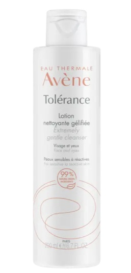
Tolérance Lotion nettoyante gélifiée
Un nettoyant doux destiné aux peaux sensibles.
Voir le produit →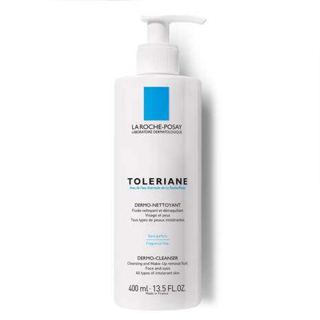
Toleriane Fluide Dermo-Nettoyant
Une alternative douce pour les peaux sensibles et réactives.
Voir le produit →En cas d'inconfort ou de sensibilité à l'eau
Après le nettoyage, une brume d'eau thermale peut apporter une sensation de fraîcheur et de confort à la peau. Séchez ensuite délicatement le visage en tamponnant, sans frotter.
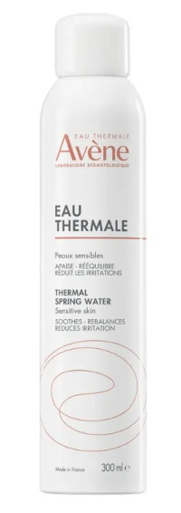
Spray d'Eau Thermale
Une brume apaisante adaptée aux peaux sensibles et fragilisées.
Voir le produit →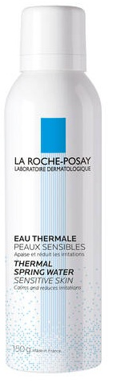
Eau Thermale
Une eau thermale apaisante et adoucissante destinée notamment aux peaux sensibles.
Voir le produit →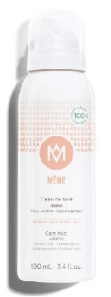
Eau de soin
Un soin destiné aux peaux sèches et fragilisées, notamment dans le contexte de la radiothérapie.
Voir le produit →Aucun produit ne doit être appliqué avant la radiothérapie. Respectez toujours en priorité les recommandations de votre équipe soignante concernant les produits pouvant être appliqués sur la zone traitée et le moment de leur application.
MATIN & SOIR
Hydrater et apaiser
Après le nettoyage, appliquez un soin hydratant sur l'ensemble du visage. Privilégiez une formule douce et adaptée aux peaux sensibles ou fragilisées.
Appliquez votre soin délicatement, sans frotter ni masser longuement la peau.
Nos suggestions
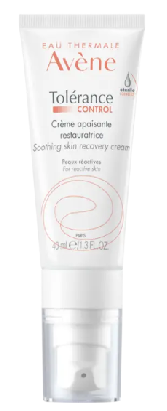
Tolérance CONTROL Crème apaisante restauratrice
Une crème hydratante et apaisante conçue pour les peaux hypersensibles et réactives, qui aide à préserver la barrière cutanée.
Voir le produit →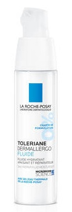
Toleriane Dermallergo Fluide
Un soin hydratant et apaisant destiné aux peaux sensibles, notamment normales à mixtes.
Voir le produit →SELON LES BESOINS DE LA PEAU
Si la peau est très sèche
Lorsque la peau tiraille beaucoup ou présente des zones particulièrement sèches, une texture plus riche peut apporter davantage de confort.
Une texture riche peut être particulièrement intéressante lorsque la peau devient sèche à très sèche. Adaptez toujours votre routine à votre confort et aux recommandations de votre équipe soignante.
Nos suggestions
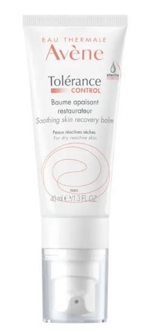
Tolérance CONTROL Baume apaisant restaurateur
Une texture riche destinée aux peaux sèches à très sèches, hypersensibles ou réactives.
Voir le produit →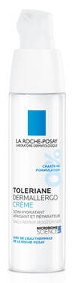
Toleriane Dermallergo Crème
Un soin hydratant et apaisant pour les peaux normales à sèches, sensibles et fragilisées.
Voir le produit →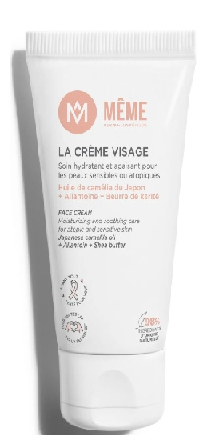
Crème pour le visage
Une crème hydratante et nourrissante destinée notamment aux peaux très sèches, sensibles ou fragilisées par les traitements.
Voir le produit →MATIN & SOIR
Prendre soin du contour des yeux
La peau du contour des yeux est particulièrement fine et fragile. Lorsqu'elle devient sèche ou inconfortable, privilégiez un soin hydratant et apaisant adapté à cette zone sensible.
Appliquez une petite quantité de soin en tapotant délicatement du bout des doigts, sans frotter ni tirer la peau.
Nos suggestions
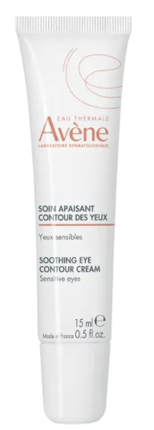
Soin apaisant contour des yeux
Un soin sans parfum qui hydrate et apaise la zone sensible du contour des yeux.
Voir le produit →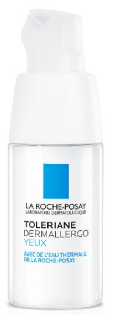
Toleriane Dermallergo Crème Contour des Yeux
Un soin hydratant et apaisant adapté aux contours des yeux secs, sensibles et fragilisés.
Voir le produit →LE MATIN & AVANT L'EXPOSITION
Protéger sa peau du soleil
Pendant certains traitements anticancéreux, la peau peut devenir plus sensible au soleil. Une protection solaire adaptée est donc particulièrement importante dès que vous vous exposez.
Appliquez une protection solaire SPF50+ en dernière étape de votre routine du matin, avant le maquillage, et renouvelez régulièrement l'application lors d'une exposition prolongée.
La crème solaire ne constitue pas à elle seule une protection complète. Lorsque l'exposition est importante, privilégiez également l'ombre, un chapeau à larges bords, des lunettes de soleil et des vêtements couvrants.
Nos suggestions
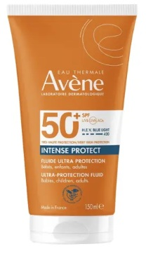
Intense Protect SPF50+
Une très haute protection solaire visage et corps destinée notamment aux peaux sensibles et vulnérables au soleil.
Voir le produit →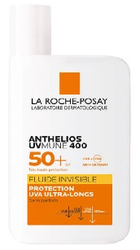
Anthelios UVMune 400 Fluide Invisible SPF50+
Une très haute protection UVA et UVB sans parfum, adaptée notamment aux peaux sensibles et réactives.
Voir le produit →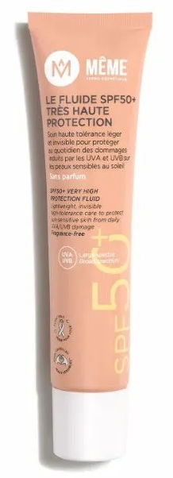
Fluide SPF50+ très haute protection
Une protection quotidienne légère et sans parfum, pensée pour les peaux sensibles et fragilisées.
Voir le produit →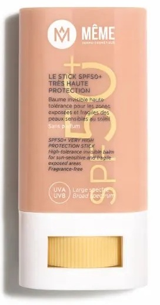
Stick SPF50+ très haute protection
Un format pratique pour protéger les zones particulièrement exposées ou effectuer des retouches au cours de la journée.
Voir le produit →Les recommandations de votre équipe soignante concernant la zone irradiée restent toujours prioritaires. Demandez notamment quels produits peuvent être appliqués sur cette zone et à quel moment par rapport aux séances.
TOUT AU LONG DE LA JOURNÉE
Ne pas oublier les lèvres
Les lèvres peuvent elles aussi devenir sèches, inconfortables ou gercées pendant les traitements. Appliquez régulièrement un baume nourrissant et protecteur, dès que vous ressentez des tiraillements.
Gardez votre baume à portée de main et renouvelez l'application aussi souvent que nécessaire. Évitez d'arracher les petites peaux, au risque d'irriter davantage les lèvres.
Nos suggestions
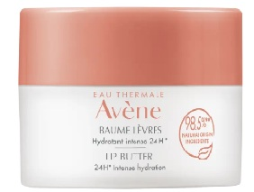
Cold Cream Baume lèvres hydratant intense 24 h
Un baume destiné aux lèvres sensibles, sèches à très sèches, pour les hydrater, les nourrir et les protéger.
Voir le produit →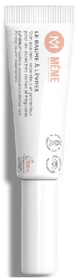
Baume à lèvres
Un baume pensé pour apporter confort et protection aux lèvres très sèches, gercées ou fragilisées.
Voir le produit →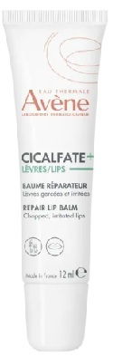
Cicalfate Lèvres Baume réparateur
Un soin pour les lèvres très sèches, gercées ou irritées qui aide à les nourrir et à les protéger.
Voir le produit →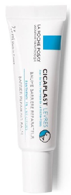
Cicaplast Lèvres
Un baume protecteur destiné aux lèvres sèches, abîmées, gercées ou irritées.
Voir le produit →BONUS • FACULTATIF
Et le sérum ?
Le sérum n'est pas indispensable. Une routine simple avec un nettoyage doux, une bonne hydratation et une protection solaire adaptée peut déjà suffire.
Si votre peau le tolère bien et que vous souhaitez compléter votre routine, vous pouvez ajouter un sérum hydratant ou apaisant avant votre crème.
Introduisez un nouveau produit progressivement. Si votre peau picote, brûle, rougit ou devient plus inconfortable après son application, arrêtez de l'utiliser et demandez conseil à votre équipe soignante si les symptômes persistent ou sont importants.
Nos suggestions
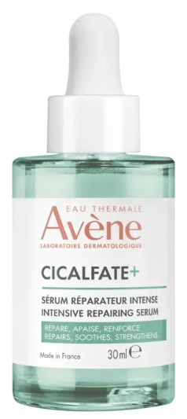
Cicalfate+ Sérum restaurateur intense
Un sérum destiné aux peaux sensibles et fragilisées, qui aide à hydrater et à soutenir la barrière cutanée.
Voir le produit →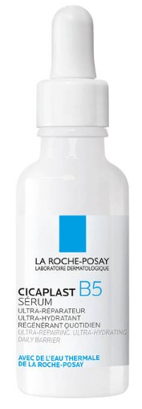
Cicaplast B5 Sérum
Un sérum hydratant à la vitamine B5 destiné notamment aux peaux déshydratées ou fragilisées.
Voir le produit →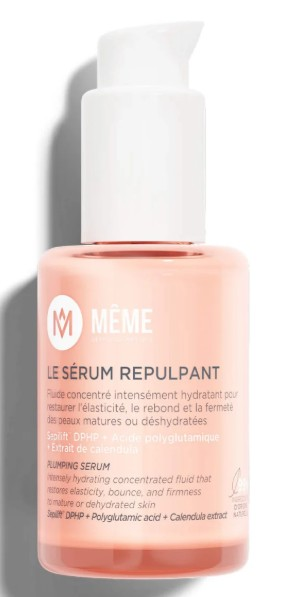
Sérum repulpant
Un sérum hydratant pensé pour apporter davantage de confort et de souplesse aux peaux sensibles et fragilisées.
Voir le produit →LE PETIT MOT D'ONCODERMIA
Prendre soin de soi, avec douceur
Prendre soin de sa peau pendant les traitements, ce n'est pas chercher à retrouver une peau « parfaite ». C'est avant tout l'écouter, la protéger et lui apporter le confort dont elle a besoin, jour après jour.
« La beauté commence au moment où vous décidez d'être vous-même. »
— Coco Chanel